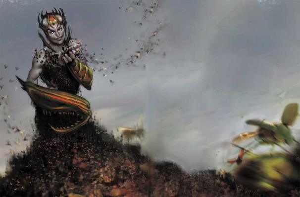

图为瓦尔拉拉Valaara
异变魔们知晓凡人所不能领悟的秘密，谋划着凡人所无法理解的计划。一些贤者相信异变魔们是艺术家，将世界当做它们的画布；它们摧毁文明，释放怪物，因为对他们来说，这是美好的事情。而另一些人则说，异变魔的存在超越了时间，其行为只有在千年为单位中才有意义。还有一些人断言，任何能理解异变魔动机的人都会立即转而支持它们的事业，即过于密切地研究异变魔本身便具有危险，它们的真相会破坏之前的理解和认知。尽管它们可能神秘莫测，但异变魔毫无疑问是邪恶的。它们摧毁无辜的生命和整个文明，而没有丝毫悔意。
同一主题Unifying Theme.每一个异变魔都具有独特的主题：贝拉希拉与视线相连，瓦尔拉拉是昆虫，而迪恩是腐坏和进化。这样的主题反应在异变魔的外表、它的树下和创造的共生体上。如果异变魔是艺术家，它的主题便是其媒介。如果它 是征服者，其主题变定义了它的武器和想要创造的世界。此外，每一个异变魔都有着与特定主题相关的秘密和启示——而这些凡人的心智无法理解。当贝拉希拉出现时，人们可能会记起他们曾见过但忘却的事情。在瓦尔拉拉周围他们可能会感到昆虫在他们血肉中挖掘，或者察觉到他们盟友的想法——成为蜂巢思维的一部分的短暂感觉。
怪异，令人不安Alien and Unsettling.在与异变魔的遭遇中，考虑通过以下方式强调其异界本质：
异变魔能以一个附赠动作传送30尺。这反应了异变魔与空间不连续的连接。异变魔在空间中跳跃，但你不会记得它曾经移动。你可以把它描绘为一种持续不断、随意发生的效果；即使不在战斗中，异变魔也会在空间之间跳跃，不受距离或是时间概念的影响。
异变魔的外观是主观的。基本的事实不会变化：异变魔是中型的两足生物，它的装备不会改变。但除此以外，它的外观会反映出其主题与异界本质的结合。比如说，瓦尔拉拉通常是表现为一具融合了昆虫特征的天使般的人形。但是，当人们遭遇异变魔之后，比较他们笔记的人可能会发现在细节上不全然相同。异变魔可能会像是看到它的人知道的某人，或者它的外表会在谈话中途改变。这并不是异变魔所控制的能力，也不少有益的特质，这只是他们异界本质的一部分。
异变魔具有120尺心灵感应。这是它们主要的沟通方式，设计目的是比通常的心灵感应范围更大。一个异变魔可以同时与范围内任意数量的生物交流，如同其他生物发出声音一样投出思想。通常当异变魔“开口说话”时，所有的生物都会受到相同的讯息，但DM可能会决定让一个或多个生物收到不同的信息。就像人们在看一个异变魔时会看到不同事物一样，两个人也能以不同的方式从异变魔那里受到信息。你可能会觉得异变魔以一种古怪而陌生的声音大声说话，而另一个人则可能会听到异变魔宛如死去情人在他们耳边低语一般说话。另一个人可能根本不记得异变魔说了什么，他们只记得那些词句存在，就像他们一直知道一样。
·异变魔的异种心智特性反应了异变魔经历现实的方式过于古怪，因此任何其他生物试图阅读他们的思想——并以他们的方式观察世界时会陷入疯狂。
任何和异变魔的遭遇都应当因其怪异、未知的本性而可怖。砂主和黑暗梦境的行动是有意义的：梦族希望控制人类的梦境，而砂主努力地在释放他们被封印的魔君。异变魔的行动同样致命且富有破坏性，但我们却无从理解它们所求何物，而试图这样做的人往往成为了邪教徒。